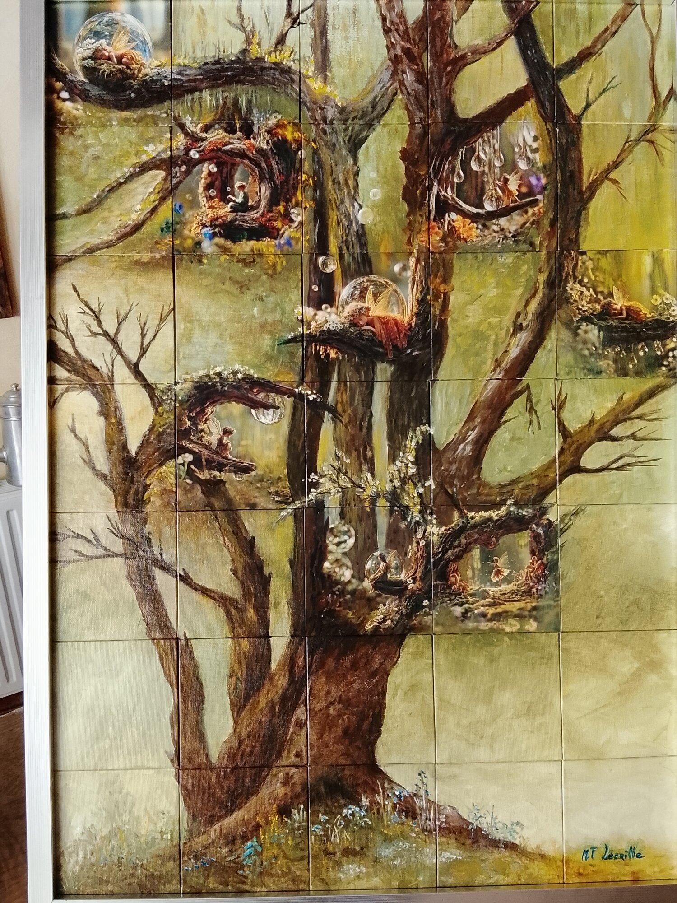
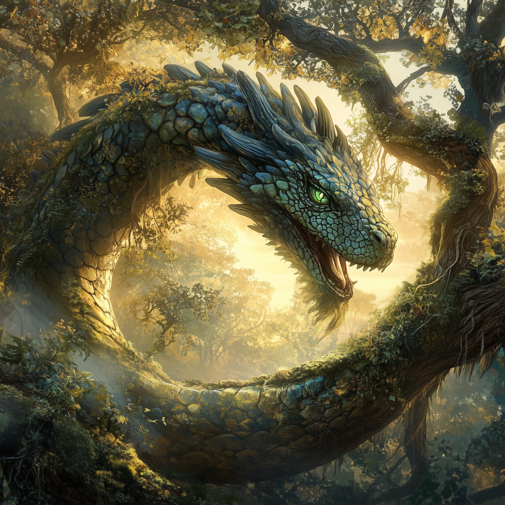
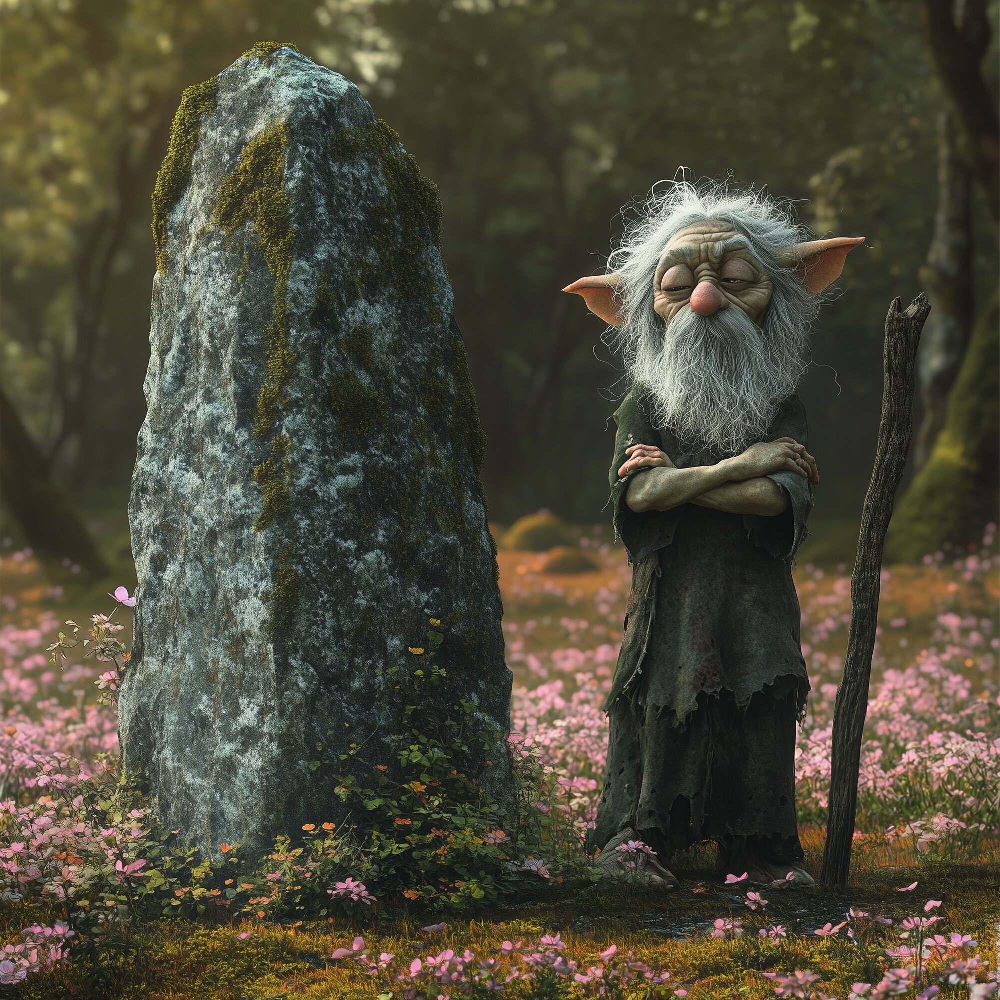

Via Gnosis · Salon des Arts de Sochaux
Trois œuvres hybrides, nées d'un dialogue à deux mains : la matrice Dibond générée par intelligence artificielle par Thierry Voitot, prolongée et réinventée à l'huile par Marie-Thérèse Lecrille.

Œuvre n° 1
50 × 70 cm — 800 €

Œuvre n° 2
Triptyque, 3 × 30×30 cm — 600 €

Œuvre n° 3
Triptyque, 3 × 30×30 cm — 600 €
Nous contacter
24ᵉ Salon des Arts de Sochaux — 29 et 30 août 2026